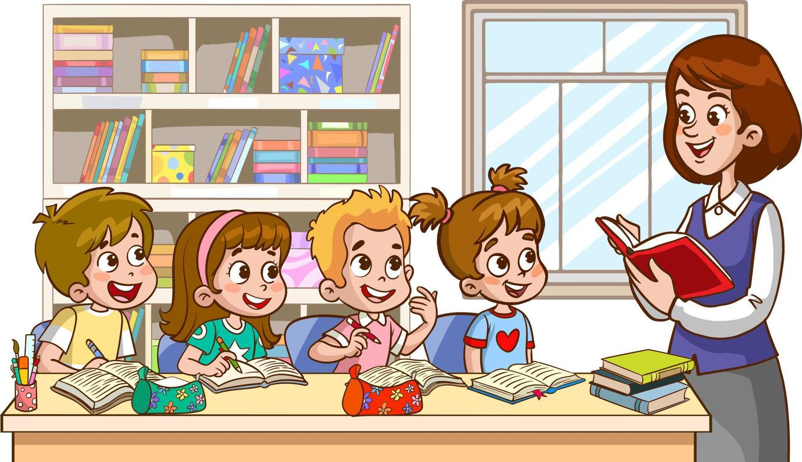

In Object-Oriented Programming (OOP), relationships between objects are fundamental to understanding how systems are designed and structured. These relationships define how objects interact and collaborate with one another. The three primary relationships in OOP are:
Association is a relationship where two objects are connected or related, but neither object necessarily "owns" the other.
Aggregation is a special type of association where one object contains another object, but both can exist independently. It is often called a "has-a" relationship.
Composition is a stronger form of aggregation where one object owns another, and the contained object cannot exist without the container. It is also known as a "part-of" relationship.
A teacher and a student. A teacher teaches students, and students learn from a teacher, but both exist independently.
A university contains departments, but if a university is shut down, the departments can still exist independently.
Key Point:
It shows a whole-part relationship, but without strong ownership.
A house and its rooms. If the house is destroyed, the rooms no longer exist either.
Key Point:
This shows a strong lifecycle dependency between the container and the contained object.